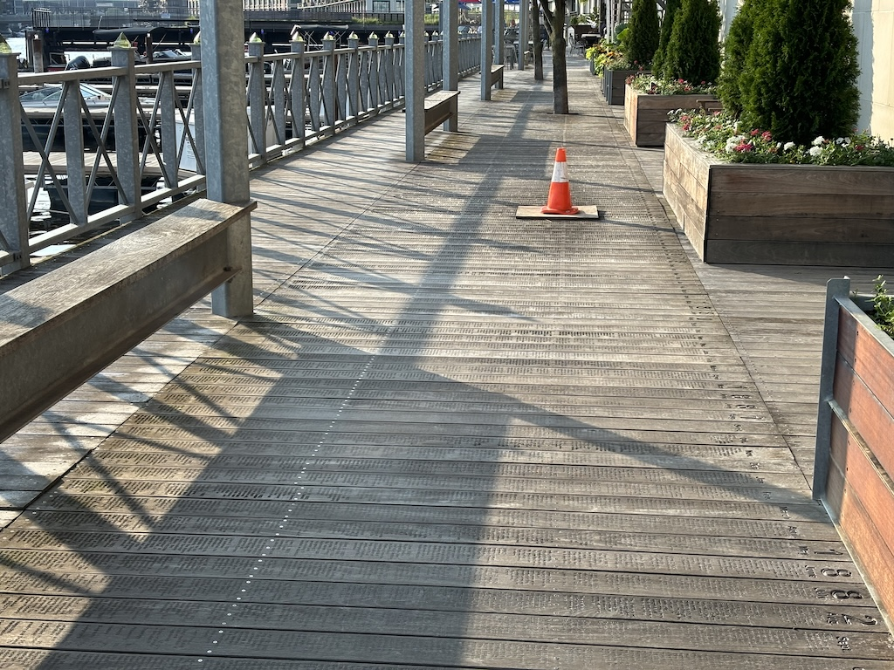

9th July 2024
During my time in Chicago I found out the Amtrak train to Milwaukee was only a couple of hours. It also boasted riding pretty much directly along the lake side which surely would be a beautiful ride. There was even a baseball game in town on - the Milwaukee Brewers were playing the !NEW JERSEY? UNSURE Pirates. So off to Illinois to see the Brewers I went.

Milwaukee felt to me like a quieter and even more spread out version of Chicago. Note that I mean this in the feel of the city center - I haven't checked but based on the population there's no way Milwaukee expands as far as Chicago does west away from the lake. But the streets here were broader still yet quieter with less cars whizzing around. Walking along the riverside as shown below it was very peaceful, even if sadly a little overcast.

After stopping into a breakfast place to get a fry up and coffee I discussed with the waitress what would be worth seeing in and around before the game. Right across the street from where we were was Milwaukees quite quirky National Bobblehead hall of fame and museum. Checking the prices and seeing it to only be $5 I decided I'd go, especially due to how unusual a sort of recommendation this was. Why would a city smaller than Bristol host the largest collection of bobbleheads in the US? I couldn't tell you but it was heaps entertaining. They had pretty much every pop culture character, celebrity figure or politician I could think of. Here's a snap I took of the fellowship that of course was also on display, although I don't remember Gandalf the White returning 3 times taller than Aragorn...

After seeing this it was time to get the bus over to the Brewers stadium. A bunch of people of course were "tail-gating" in the car park, which was the first time I'd seen it. For those who don't know tail-gating is very simple. You park up in the stadium car park and "pre-game" (drink) by the back of your car. Having a whole line of cars doing this makes for a strong community and social vibe to the meet up. To my surprise it wasn't just young lads getting drunk - whole families with camping equipment were flipping burgers and making hot dogs. Someone brought a !CORN BAG? set out and were inviting people to play. It definitely surprised me how little of it was about getting drunk before going in for the game.
I headed into the merch store to see how much a baseball club at this league charges for a jersey. As per usual it was far too much to justify spending any money here, although I was almost persuaded by this Brew Crew hat. Out of context it would make for a great summer holiday hat and anyone in the know would appreciate it as a good but niche reference to the team.

Insert content here

Insert content here

Insert content here

Insert content here

Insert content here
Insert content here
Navigate home